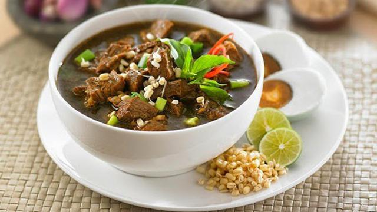

6 Menu Makanan Khas Jawa Timur 🍲

Rawon
Sup daging berkuah hitam khas Surabaya, gurih dan harum dengan kluwek.
Bahan-bahan:
- 500 gr daging sapi, potong dadu
- 5 buah kluwek, ambil isinya
- 6 siung bawang merah
- 4 siung bawang putih
- 2 cm kunyit, jahe, lengkuas
- 2 batang serai, memarkan
- 3 lembar daun jeruk
- Garam, gula, kaldu bubuk secukupnya
Cara membuat:
- Haluskan semua bumbu termasuk kluwek.
- Tumis bumbu sampai harum, masukkan ke dalam rebusan daging.
- Tambahkan daun jeruk, serai, garam dan gula.
- Masak hingga daging empuk dan kuah hitam mengental.
- Sajikan dengan nasi, tauge, sambal, dan kerupuk udang.

Rujak Cingur
Salad khas Surabaya dengan irisan cingur (hidung sapi), bumbu petis, dan sayuran.
Bahan-bahan:
- 200 gr cingur sapi, rebus dan iris
- Kangkung rebus, tauge, mentimun, kol, tahu dan tempe goreng
- Lontong atau ketupat
- Kerupuk udang
Bahan bumbu petis:
- 5 sdm petis udang
- 2 siung bawang putih, goreng
- 5 cabai rawit
- 1/2 sdt garam
- 2 sdm gula merah serut
- 2 sdm kacang goreng
- Air matang secukupnya
Cara membuat:
- Haluskan semua bahan bumbu petis dan encerkan dengan air.
- Campur semua bahan rujak, siram dengan bumbu petis.
- Taburi kerupuk dan sajikan segera.

Lontong Balap
Lontong dengan tauge, lentho, dan kuah gurih khas Surabaya.
Bahan-bahan:
- Lontong, iris
- 200 gr tauge, seduh air panas
- 3 siung bawang putih
- 2 sdm kecap manis
- 2 gelas air kaldu
- Garam, merica secukupnya
Bahan pelengkap:
- Lentho (perkedel kacang tolo)
- Sambal, bawang goreng, kerupuk
Cara membuat:
- Tumis bawang putih, tuang air kaldu, bumbui kecap, garam dan merica.
- Susun lontong dan tauge di mangkuk.
- Siram kuah, tambahkan lentho, sambal, dan bawang goreng.

Tahu Tek
Tahu goreng, kentang, dan lontong dengan bumbu kacang petis.
Bahan-bahan:
- 4 potong tahu goreng
- 2 buah kentang rebus, potong
- 1 lontong, potong
- Kerupuk udang
Bumbu kacang petis:
- 100 gr kacang tanah goreng
- 3 sdm petis udang
- 3 cabai rawit
- 1 siung bawang putih
- 2 sdm gula merah
- Air secukupnya
Cara membuat:
- Haluskan bumbu kacang petis hingga halus.
- Susun tahu, kentang, dan lontong di piring.
- Siram bumbu, taburi kerupuk.

Pecel Madiun
Sayuran rebus dengan sambal kacang khas Madiun.
Bahan-bahan:
- Kangkung, bayam, kacang panjang, tauge (rebus)
- Tempe goreng dan nasi
Bumbu pecel:
- 100 gr kacang tanah goreng
- 3 cabai merah keriting
- 2 siung bawang putih
- 2 sdm gula merah
- 1 sdm air asam jawa
- Garam dan air matang secukupnya
Cara membuat:
- Haluskan bumbu pecel lalu encerkan dengan air.
- Sajikan sayuran di piring dan siram dengan bumbu pecel.

Sego Tempong
Nasi dengan sayur rebus, lauk, dan sambal super pedas khas Banyuwangi.
Bahan-bahan:
- Nasi hangat
- Sayur rebus: bayam, kenikir, daun singkong
- Lauk: ikan asin, tahu/tempe goreng
Sambal tempong:
- 10 cabai rawit merah
- 1 tomat merah
- 1 siung bawang putih
- 1 sdt terasi, garam, dan gula secukupnya
Cara membuat:
- Haluskan semua bahan sambal dan goreng sebentar.
- Sajikan nasi dengan sayur, lauk, dan sambal di atasnya.